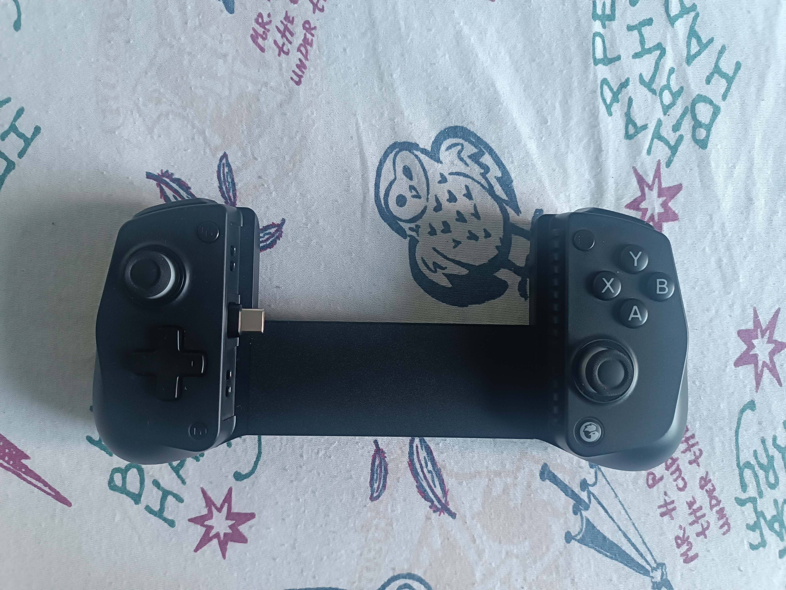
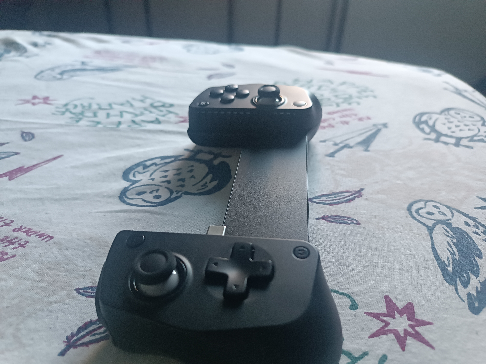
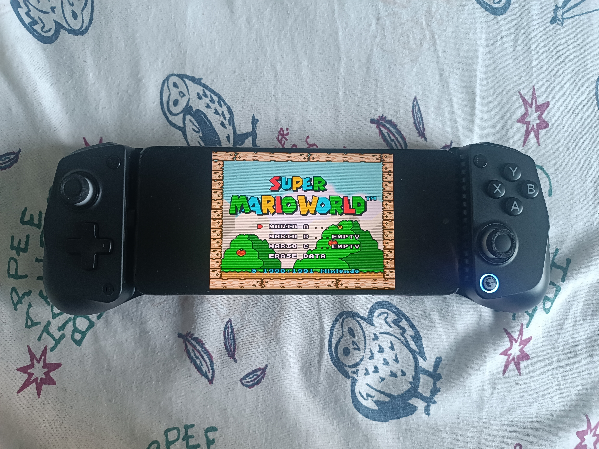
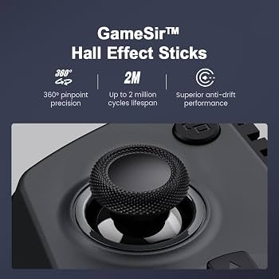
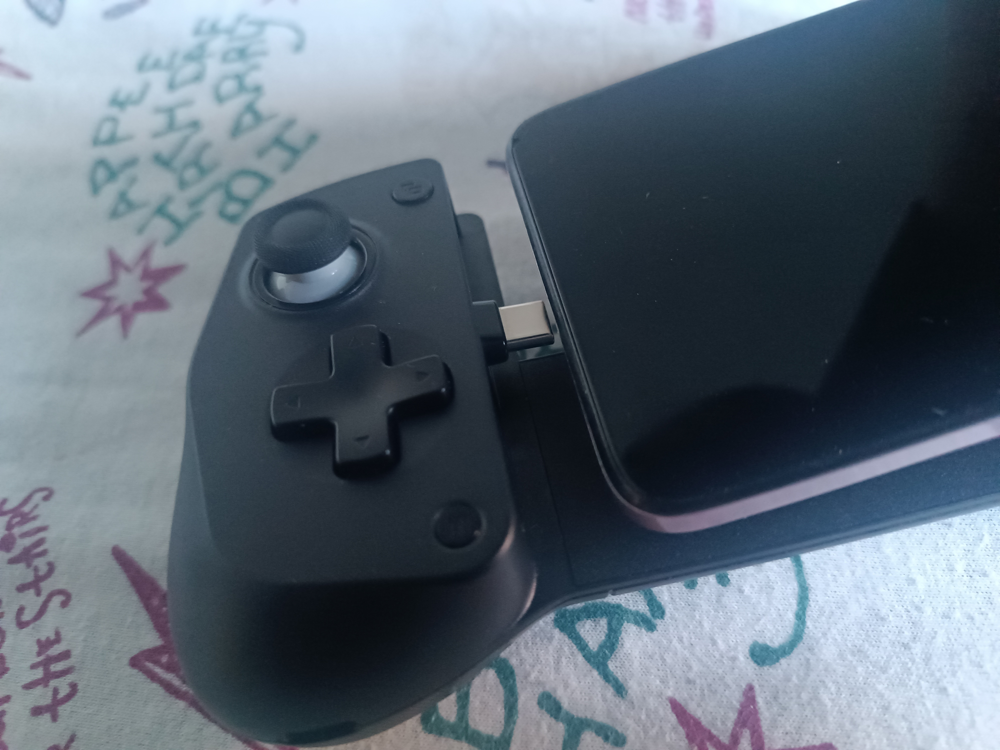
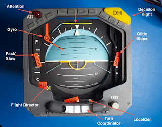
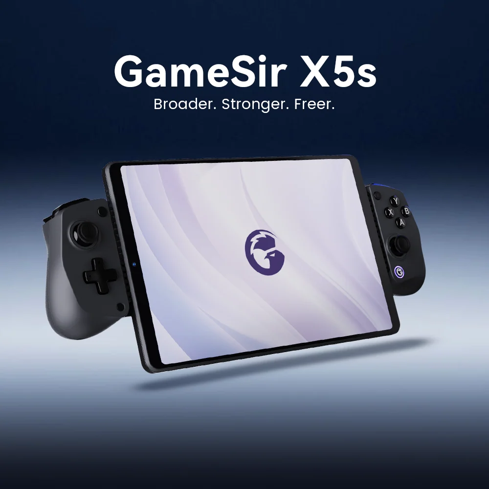
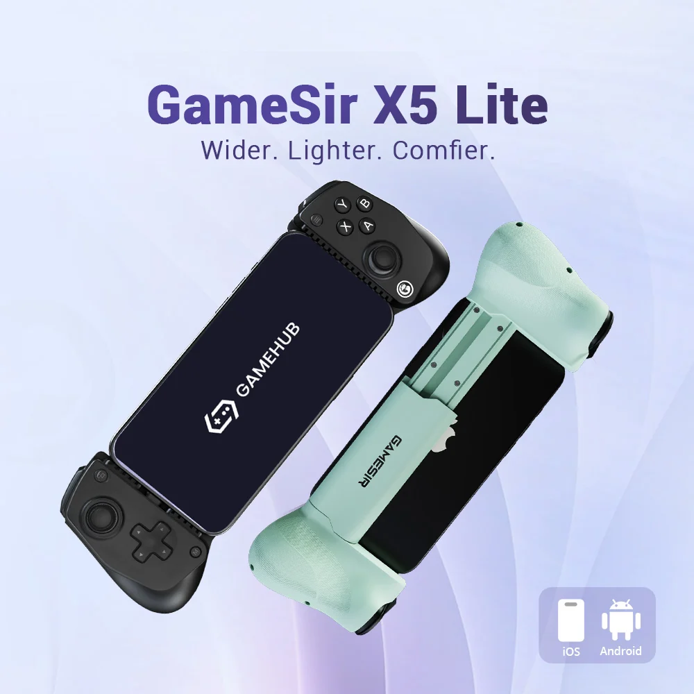
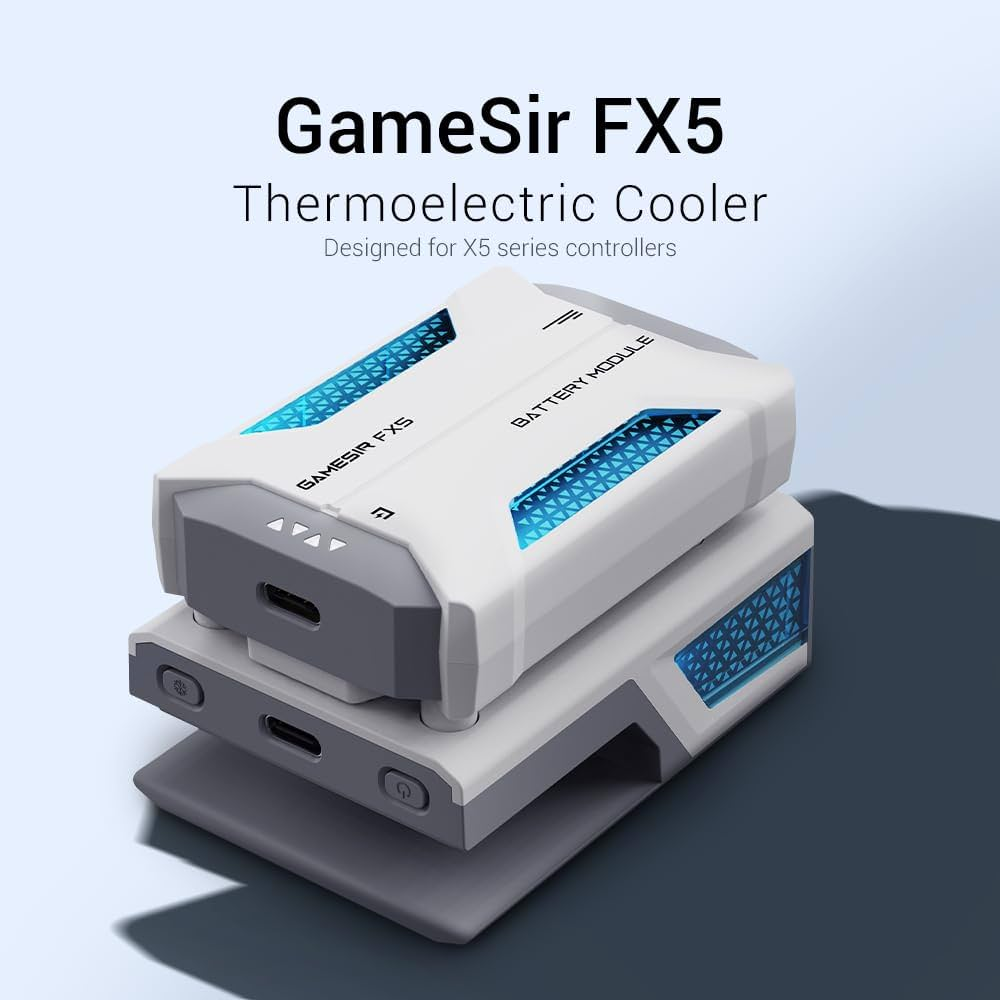
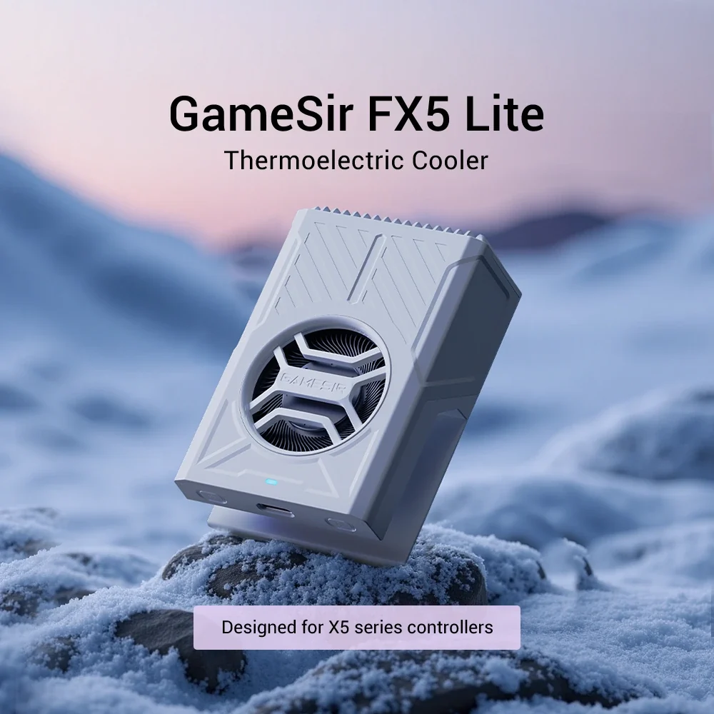

GameSir X5s (Posse de Théo Oliveira)

GameSir X5s
O GameSir X5s é um gamepad telescópico voltado
principalmente para dispositivos móveis, mas também
compatível com Nintendo Switch, Switch 2 e PC,
dependendo do modo de conexão utilizado.
Diferentemente de um controle convencional, o X5s
possui uma estrutura expansível que segura o dispositivo
no centro, transformando o conjunto em algo semelhante
a um console portátil.
O controle possui conectividade em três modos:
Bluetooth, USB-C com fio e conexão sem fio de 2,4 GHz.
A GameSir informa ainda suporte a sticks Hall Effect,
gatilhos analógicos Hall Effect, vibração HD, giroscópio
de 6 eixos e bateria interna de 840 mAh.
O X5s pesa aproximadamente 174,1 gramas e aceita
dispositivos com comprimento entre 105 e 213 mm.
Especificações Técnicas
O X5s possui aproximadamente 196,7 × 88 × 46 mm
quando considerado o corpo do controle. Seu peso
informado pela GameSir é de aproximadamente 174,1 g.
O sistema telescópico permite acomodar dispositivos
com comprimento de 105 a 213 mm. A alimentação interna
é composta por duas células de 420 mAh, totalizando
840 mAh.
Os sticks utilizam tecnologia Hall Effect e os
gatilhos também utilizam sensores Hall Effect.
Os botões ABXY e o D-pad utilizam construção
por membrana.
Estrutura Telescópica


Uma das principais características do X5s é sua
estrutura telescópica. As duas metades do controle
ficam separadas por um mecanismo deslizante, permitindo
que o espaço central seja ajustado de acordo com o
tamanho do dispositivo utilizado.
A faixa oficialmente especificada pela GameSir é
de 105 a 213 mm de comprimento compatível.
A estrutura possui elementos de pressão e apoio
responsáveis por manter o telefone ou dispositivo
firmemente posicionado durante a utilização.
Suporte ao Smartphone
O X5s foi desenvolvido principalmente para utilização
com dispositivos móveis. Em vez de apoiar o celular
sobre uma mesa ou suporte separado, o próprio gamepad
funciona como estrutura de sustentação.
O dispositivo é colocado entre as duas extremidades
telescópicas. Almofadas e superfícies de contato
ajudam a proteger o aparelho e manter sua posição.
A GameSir fornece também pads de borracha de ajuste
que podem ser utilizados conforme a espessura ou
configuração do dispositivo.
Sticks Hall Effect


Os dois analógicos do X5s utilizam tecnologia
Hall Effect. Diferentemente de mecanismos baseados
exclusivamente em contato resistivo, sensores Hall
detectam alterações no campo magnético associadas
ao movimento do stick.
A GameSir especifica os sticks como componentes
Hall Effect e anuncia resistência ao problema
tradicional de drift associado ao desgaste de
potenciômetros convencionais.
O mecanismo também possui botão de pressionamento
integrado aos sticks.
Gatilhos Hall Effect
LT e RT utilizam sensores Hall Effect e funcionam
como entradas analógicas.
Isso permite que o controle identifique diferentes
níveis de pressão dos gatilhos, característica útil
em jogos de corrida, simuladores e outros títulos
que utilizam aceleração ou frenagem progressiva.
O X5s também possui um modo de gatilho rápido,
conhecido pela GameSir como Hair Trigger Mode,
que altera o comportamento dos gatilhos para
respostas mais rápidas.
Botões ABXY
Os quatro botões frontais A, B, X e Y utilizam
construção por membrana.
Um dos diferenciais do X5s é que o conjunto ABXY
pode ser fisicamente reorganizado. Isso permite
alternar a disposição dos botões para diferentes
padrões de controle, incluindo layouts associados
a diferentes plataformas.
A GameSir informa ainda uma durabilidade anunciada
de até 2 milhões de acionamentos para os botões
de membrana.
Direcional D-Pad
O direcional digital utiliza construção por
membrana. Sua função é registrar os comandos
direcionais digitais para cima, baixo, esquerda
e direita.
A estrutura mecânica do D-pad transmite a pressão
aplicada pelo jogador para os elementos de contato
localizados internamente.
LB e RB
Os botões superiores LB e RB ficam posicionados
acima dos gatilhos LT e RT.
Diferentemente dos ABXY e do D-pad, as especificações
disponíveis para o X5s identificam os shoulder buttons
como micro switches.
Esses componentes fornecem uma resposta mecânica
diferente dos botões de membrana.
Giroscópio de 6 Eixos

O X5s possui um sistema de controle de movimento
baseado em um sensor de 6 eixos.
Esse conjunto combina informações de movimento
angular e aceleração para permitir que o sistema
interprete a movimentação física do controle.
A GameSir especifica o suporte ao controle de movimento
nativo especialmente para Nintendo Switch e Switch 2.
Vibração HD
O X5s possui dois motores de vibração HD, posicionados
nas regiões das empunhaduras.
Os motores produzem o feedback físico percebido
pelo jogador através das mãos. A intensidade da
vibração pode ser ajustada por software, e a GameSir
informa cinco níveis de ajuste para o sistema.
Os motores são componentes eletromecânicos e possuem
um conjunto rotativo interno responsável pela produção
da vibração.
Sistema de Alimentação
O X5s utiliza bateria interna recarregável.
A especificação oficial informa capacidade total
de 840 mAh, formada por duas células de 420 mAh,
uma em cada lado do controle.
A utilização de duas células acompanha a construção
dividida do gamepad e permite distribuir a massa
pelas duas empunhaduras.
A alimentação é recarregada através da porta USB-C.
USB Type-C
A porta USB Type-C possui dupla importância:
alimentação/recarregamento da bateria e comunicação
com dispositivos compatíveis no modo com fio.
O conector é montado mecanicamente no conjunto
eletrônico e possui contatos metálicos para
transferência de energia e dados.
Conectividade em Três Modos
Uma das características centrais do X5s é a
conectividade em três modos.
O primeiro é Bluetooth. O segundo é a conexão
USB-C com fio. O terceiro é a comunicação sem fio
de 2,4 GHz.
A GameSir informa que o dongle de 2,4 GHz não vem
incluído no produto padrão. Portanto, o sistema
eletrônico do controle possui suporte à modalidade,
mas o receptor externo é um acessório separado.
Software GameSir App
O X5s pode ser configurado através do aplicativo
GameSir.
O software permite modificar parâmetros como
zonas mortas, mapeamento dos controles, intensidade
da vibração, comportamento do turbo e sensibilidade
do giroscópio, além de possibilitar atualizações
de firmware.
Dessa maneira, parte das características do controle
não está definida apenas pelo hardware, mas também
pelo firmware executado pelo dispositivo.
Função Turbo
O X5s possui função Turbo.
De acordo com as especificações da GameSir,
a função pode ser utilizada com A, B, X, Y,
LB, RB, LT e RT.
O Turbo é uma função implementada através da
eletrônica e do firmware do controle, permitindo
que determinados comandos sejam registrados
repetidamente enquanto o botão correspondente
permanece acionado.
Empunhaduras
As duas empunhaduras formam as regiões laterais
seguradas pelas mãos do jogador.
A GameSir utiliza textura gravada a laser nas
empunhaduras, criando uma superfície com maior
aderência.
Internamente, as empunhaduras também servem como
regiões de acomodação para componentes como
bateria, motores de vibração e partes da eletrônica.
Variações e Ecossistema X5
O X5s pertence à família X5 de controles telescópicos
da GameSir.
A família inclui outros produtos relacionados,
como o X5 Lite e acessórios de refrigeração destinados
à linha, incluindo o FX5 e FX5 Lite.
O X5s, entretanto, possui características próprias,
especialmente sua conectividade em três modos,
bateria interna, giroscópio e controles Hall Effect.



